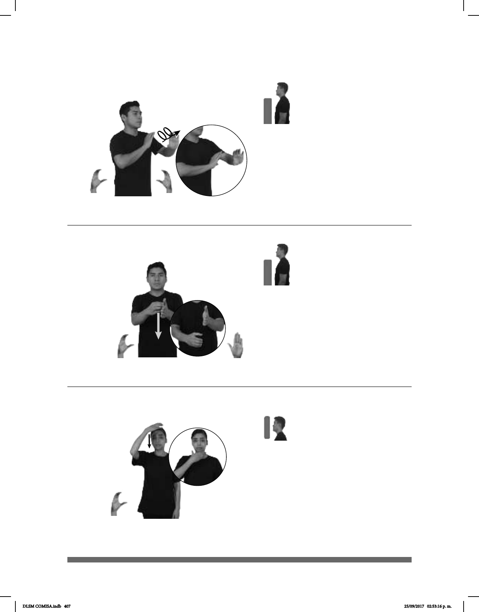

407
(C-34)
Seña: SS
C.1
A la altura del pecho.
Palmas oblicuas hacia el
centro y hacia fuera.
Los brazos siguen una
trayectoria circular hacia el frente.
1 v. tr. Producir con la voz
una serie de sonidos melodiosos
generalmente con un texto. 2 sust. f.
Cualquier melodía entonada por la voz
humana y que por lo general se
acompaña de la modulación de las
palabras.
UNA-VEZ MAÑANA FIESTA CANTAR
Seña: SB
: MD C.1, MB B-P.2
MD inicia sobre la
palma de MB y termina a la
altura de la cintura; MB a la altura
del pecho.
: MD palma hacia la
izquierda, MB palma hacia la
derecha.
MD recto.
sust. m. División que se
hace en los libros y en cualquier otro
escrito para el mejor orden y más
fácil comprensión de la materia.
(C-35)
AYER LIBRO pro-YO FAVORITO TODO CAPÍTULO++ pro-YO LEER
Ayer leí todos los capítulos de mi libro favorito.
Seña: SM
C.1
La palma inicia hacia
abajo y termina hacia adentro.
De la cabeza al cuello.
Recto.
sust. f. Parte delantera
de la cabeza humana desde la frente
hasta la barba y parte equivalente a
ésta en la cabeza de los animales.
(C-36) Cara
pro-ELLA CARA BONITA
Ella tiene una cara bonita.
DLSM COMISA.indb 407 25/09/2017 02:53:16 p. m.